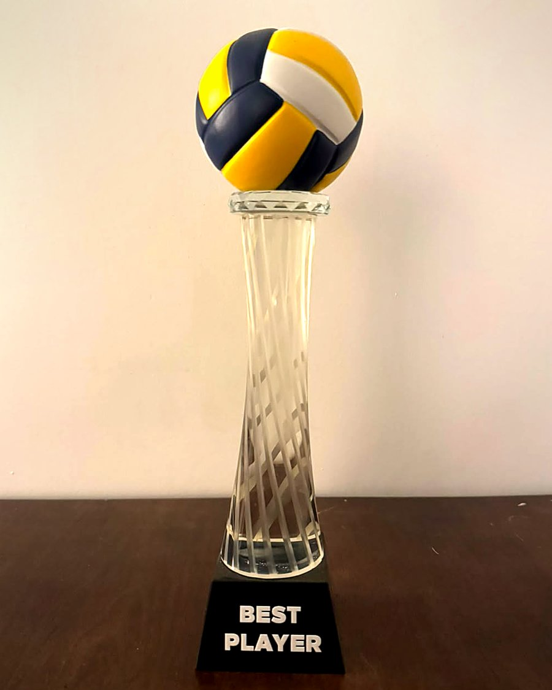
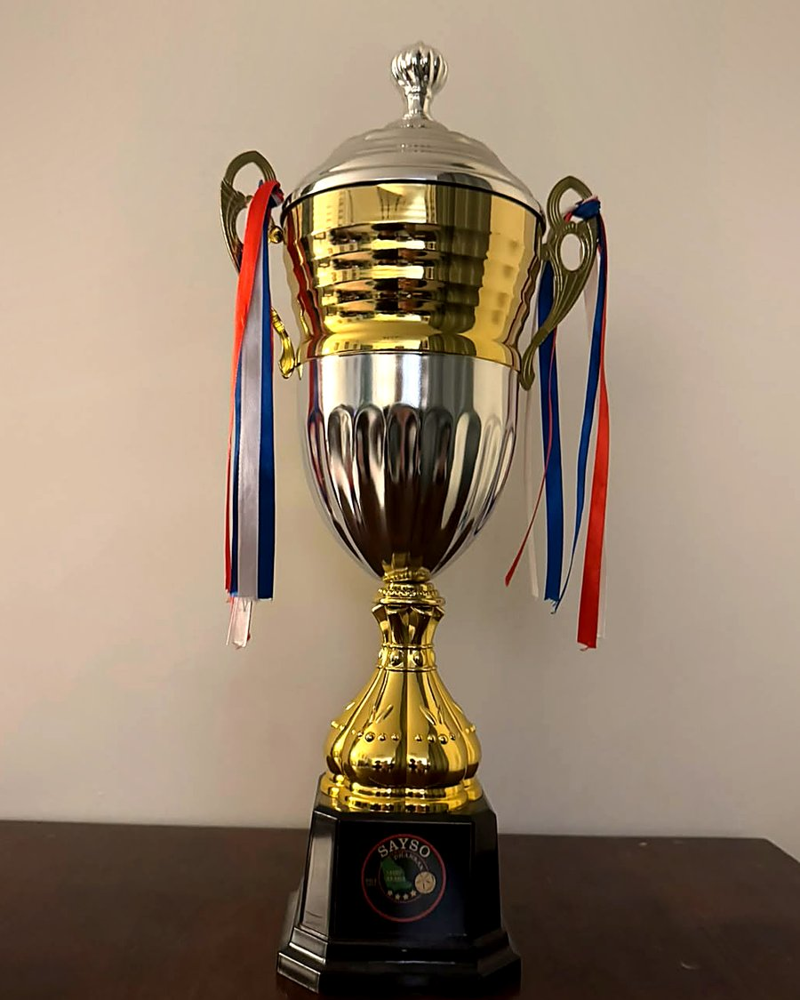
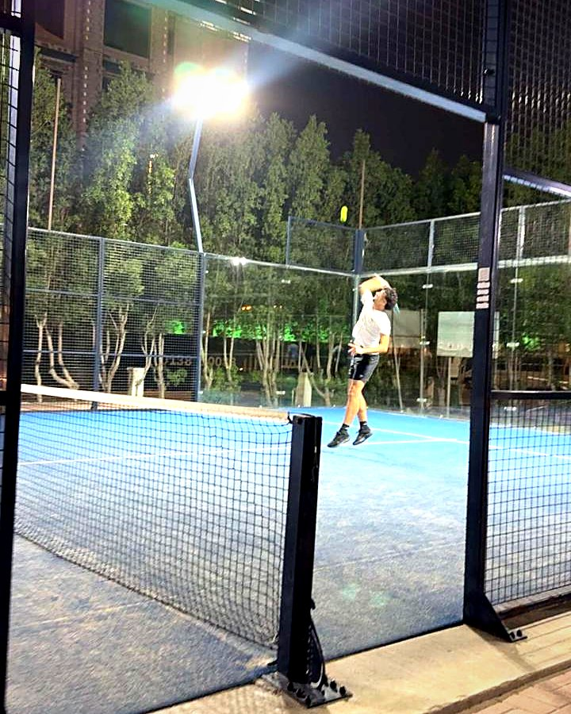
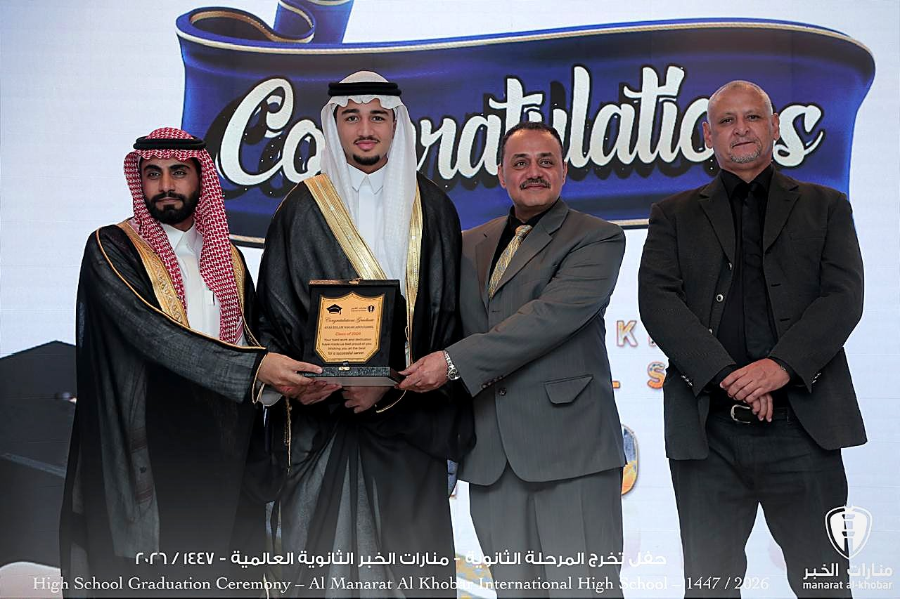

May 3, 2025 · Grade 11
Reading & Writing510
Math410
Total920
Scene 01 · Opening
A story about getting back up.
Prologue — Leaving home
GPA · out of 4.00
May 2025 · SAT Math
24th percentile
Two tests · my best of each
May 3, 2025 · Grade 11
Reading & Writing510
Math410
Total920
June 6, 2026 · Grade 12
Reading & Writing390
Math800
Total1190
SAT Superscore
1310
510 R&W + 800 Math
Superscore: the highest section scores across test dates, as accepted by many US colleges.
SFA Domes · Sports campaign · Sep 2025
2.5M
views on TikTok
After their interschool tournaments, SFA Domes picked me for a paid sports advertising campaign. Basketball, volleyball and badminton, on camera.
The trophy room




In my school’s words
Consistency, humility, teamwork, and a willingness to grow.

June 2026 · Graduation
Next: university.
Starring
For admissions, coaching or anything else:
anaoosa1121@gmail.comThank you for watching.